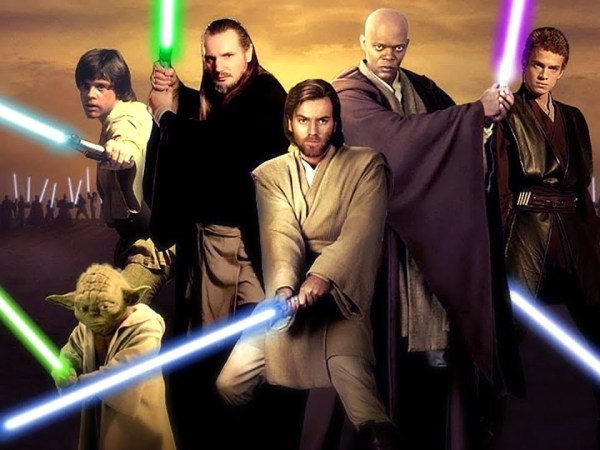

Dark Side
O lado sombrio da Força, também conhecido como Bogan, era um aspecto da Força. Os indivíduos que usaram o lado sombrio extraíram seu poder de emoções mais intensas, cruas e sombrias, como medo, raiva, ódio, paixão e agressão. Os Sith foram talvez os praticantes mais conhecidos do lado sombrio, e foram os inimigos mortais da Ordem Jedi, que serviram ao lado leve da Força. Havia outros, como o Inquisitorius e os Cavaleiros de Ren que, embora não fossem Sith, podiam usar o poder do lado sombrio.
The Force
A Força era um campo de energia que conectava tudo no universo e era conhecido por vários nomes ao longo da história galáctica. Foi criado pela vida e, portanto, residia em todas as formas de vida. Foi especialmente poderoso em um grupo seleto de indivíduos que nasceram com uma alta concentração de midi-chlorians.
Jedi
Um Jedi era um indivíduo sensível à Força, geralmente membro da Ordem Jedi, que estudava, servia-a, e usava as energias místicas da Força e seu lado luminoso. A arma de um Jedi era o sabre de luz, uma lâmina de energia pura. Os Jedi lutaram pela paz e pela justiça na República Galáctica, normalmente contra seus inimigos mortais: os Sith, organização que estudava o lado negro da Força.